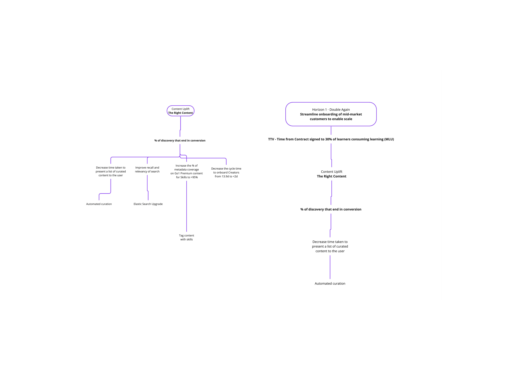
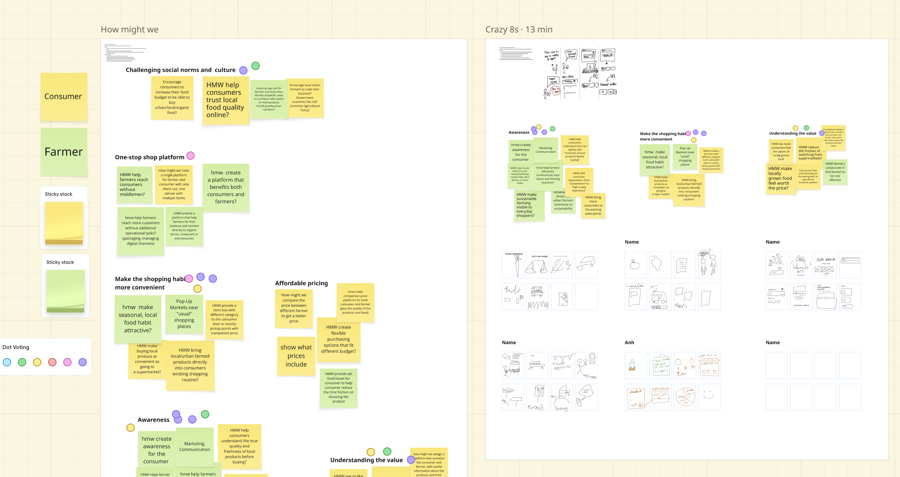
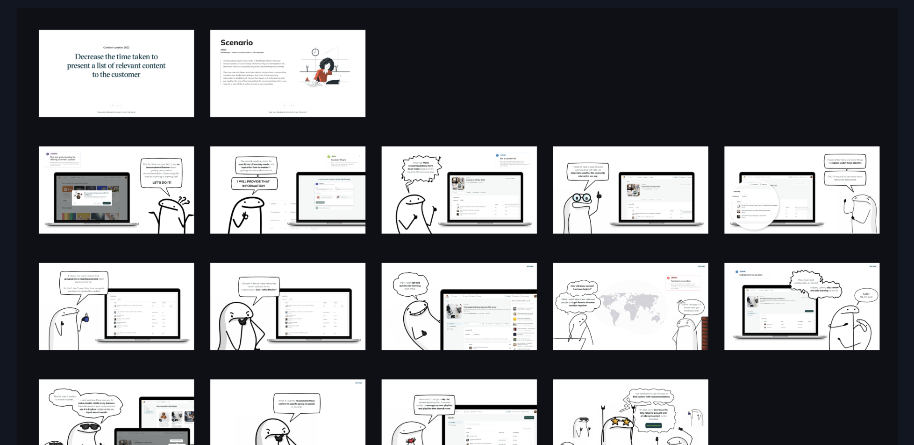

Develop
Solutions
& Ideate
From problem to idea to decision — without jumping to screens.

Winnie
Nguyen
Information
Architecture
You moved from understanding users to understanding the structure of the product they're moving through.
What you learned
- Distinguishing inherited IA from evidence-based IA
- Card sorting to understand how users mentally group content
- Drawing a current-state and evidence-based sitemap
- Mapping user flows to find structural friction
Your assignment
- Map the current-state user flow for one core task
- Annotate each step as User, System, or Third Party
- Identify the highest-friction step — and explain why it exists
From problem, to ideas, to a decision you can defend.
Opportunity Tree
Map the space between your problem and your solutions.
Explain + activity
Flow Review
Revisit your user flow to find where and what to improve.
Quick explain
Crazy 8s
Generate more ideas than you think you need.
Explain + take home
Concept Sketching
Make the best ideas visible enough to evaluate.
Explain + activity
Storyboarding
Extend your concept across time — for your assignment.
Walk-through
Prioritisation
Choose what to develop, and why.
Explain + activity
The best solution is almost never the first one.
The most common failure in ideation is converging before you've explored widely enough. The value isn't the ideas — it's the distance you travel from your starting assumption.
No evaluation
while generating.
Opportunity Tree Mapping
One outcome. A few opportunities. Many solutions.
Three levels — outcome, opportunity, solution.
The goal you're designing toward. Your problem statement. One root node.
User needs and pain points that, if addressed, would move the user toward the outcome. Not solutions — spaces where a solution could live.
Specific ideas that address an opportunity. They live under opportunities — not the outcome.
How to build the tree.
Start with your outcome
Write your problem statement at the top. This is your root node.
Map the opportunities
Ask: what are all the different user needs, pain points, or desires inside this problem? Aim for 5–8 before evaluating.
Don't solve yet
Go wide on opportunities before you touch solutions. Resist the pull — that step comes next.
Branch solutions from opportunities
For each opportunity, write 2–3 specific ideas underneath. These are your solution candidates.
Read the shape
Where are the dense branches? Where are the gaps? The shape tells you where your thinking is underdeveloped.
Increase the number of visitors returning to Disney.
Here's one I built at Go1 — content curation, mid-market onboarding.

Map your tree.
Use your problem statement from Session 3 — or the practice scenario: "Freelancers lose projects because clients forget to respond within 48 hours of a proposal."
Map opportunities
- Write your problem statement at the top.
- Generate user needs, pain points, desires — aim for at least 5.
- No solutions yet.
Branch solutions
- Pick your 3 strongest opportunities.
- Write 2–3 specific solution ideas underneath each one.
- Don't worry if some sound rough — that's the point.
Read the tree
- Which branch has the most solutions? The fewest?
- Any opportunity with no solution — and why?
- Did the tree surface anything you hadn't considered?
Every friction point on the flow is a candidate opportunity on the tree.
Crazy 8s
Crazy 8s — eight ideas in eight minutes.
Most people invest their best thinking in the first idea that sounds viable. Crazy 8s breaks that habit by forcing you to keep moving.
HMW board on the left. Crazy 8s output on the right. Dot voting in the corner.

Try it on your own.
No time to run Crazy 8s in full today — but do it before next session, before your concept sketches.
Fold an A4 into eight panels.
Set a timer — eight minutes total.
Fill every panel — no skipping, no judging.
Circle your two most interesting panels — those become your concept sketches.
Concept Sketching & Storyboarding
A single rough illustration of one idea — showing what the solution is, how it works, and why it's different.
Not a wireframe. A thinking tool, not a deliverable. If you have to narrate it for it to make sense, it needs more labelling — not more detail.
How to sketch a concept.
Pick one idea worth developing
From your Crazy 8s — usually the panel that surprised you or has the strongest underlying principle.
Draw the key moment
One screen, one interaction — the moment that makes the solution legible to someone seeing it for the first time.
Add labels, not polish
Name the components. Annotate the intent. A labelled scratchy sketch beats a polished unlabelled screen.
Write one sentence underneath
"This works because…" — if you can't finish the sentence, the concept needs more thinking, not more pixels.
Five panels — but three or four well-chosen is enough.
Who, where, when
Set the scene. Who is the user and what state are they in?
The prompt
What causes them to reach for this product?
Key steps
What do they do inside the product?
What they got
The tangible result of the interaction.
How they feel
Did the product deliver on its promise?
Allison's journey through content curation — start to finish.

Sketch your concept.
Pick the strongest idea from your Crazy 8s — and make it visible enough to share.
Draw & label
- Sketch the key screen or moment.
- Label every component — name the parts, annotate the intent.
- Underneath, write: "This works because…"
Critique
- Does your sketch make sense to someone who wasn't in your head?
- Where does it need more labelling?
- What did making the idea visible surface that the Crazy 8s panel didn't?
Prioritisation — what to develop
Place each concept honestly — then decide.
Quick wins
Prioritise immediately. Ship to build momentum and prove the direction.
Strategic bets
Worth the investment if resources allow. Validate first; plan into the roadmap.
Fill-ins
Park unless quick to test. Pick up when there's slack in the schedule.
Traps
Drop or defer. They consume energy without delivering value.
Place your concepts, then commit.
Place your concepts
- Draw the matrix on a whiteboard, FigJam, or paper.
- Write each concept on a sticky. Place them honestly.
- Connect each sticky back to the opportunity it came from on your tree.
Make a decision
- Pick one concept to develop into a prototype.
- Write: "I'm developing [concept] because [reason grounded in opportunity + matrix position]."
- Did the matrix change what you thought the best option was?
Your assignment.
Deliver two final concepts, ready to share with your PO or a key stakeholder.
The goal isn't a "winning" concept. It's two directions, grounded in the opportunity space, that have been pressure-tested with a real stakeholder. Come ready to discuss which one they responded to, and why.
-
01Build your Opportunity Tree and complete Crazy 8s — use these to explore, not as deliverables.
-
02Select your top 2 concepts from the effort–impact matrix.
-
03For each concept, prepare a refined sketch + a 3–4 panel storyboard (Trigger → Action → Outcome), plus one sentence on the opportunity it addresses and one on the assumption to validate.
-
04Share both concepts with your PO or a key stakeholder. Note their response and any pushback.
The Google Design Sprint — five days, one decision.
Crazy 8s is one technique inside a larger structured process. If your team has a big unsolved problem and a week to focus, the full Sprint is worth running.